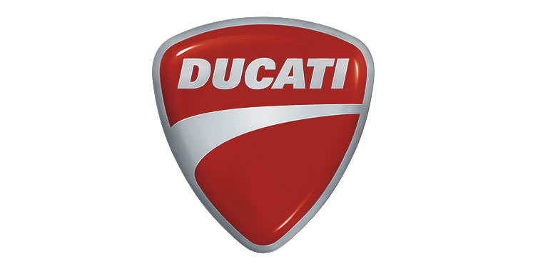
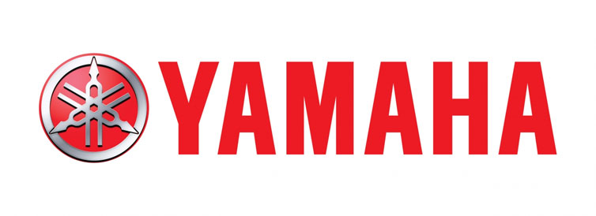

A motorcycle, often called a motorbike, bike, or cycle, is a two- or three-wheeled motor vehicle.
Motorcycle design varies greatly to suit a range of different purposes: long-distance travel, commuting, cruising, sport including racing, and off-road riding.
Motorcycling is riding a motorcycle and related social activity such as joining a motorcycle club and attending motorcycle rallies.
The 1885 Daimler Reawaken made by Gottlieb Daimler and Wilhelm Maybach in Germany was the first internal combustion, petroleum fueled motorcycle.
In 1894, Hildebrand & Wolfmüller became the first series production motorcycle.
In 2014, the three top motorcycle producers globally by volume were
Honda (28%),
Yamaha (17%) (both from Japan) and the most popular is a
Harley Davidson.
In developing countries, motorcycles are considered utilitarian due to lower prices and greater fuel economy.
Of all the motorcycles in the world, 58% are in the Asia-Pacific and Southern and Eastern Asia regions, excluding car-centric Japan.
According to the US Department of Transportation, the number of fatalities per vehicle mile traveled was 37 times higher for motorcycles than for cars.
"A bit of history and facts"
"Old-school chopper's"


Some folks feel a lot more alive when driving a motorcycle than on a car.
The open nature of the ride allows for a sensation that many can equate to a feeling of absolute freedom.
Some love the thrill of burning the asphalt like the famous bike of the Ghost Rider.
Others feel a sense of belonging to the Hell's Angels, Outlaws, and other famous motorcycle clubs.
Whatever reason you may have, a motorcycle can give you an experience no luxury car, SUV, or truck can ever provide.
This is the world’s best ride for the ultimate in riding freedom.
And in case you’re wondering what constitutes the planet’s best brands of two-wheeled wonders, we’re giving you 5.
"Top 5 best motorcycle brand's"
Harley Davidson
The two-wheeled equivalent of American muscle cars like Mustangs and Chevys, Harley-Davidson is one of the best and most iconic motorcycle brands in the world. You may not see them in MotoGP circuits or any racing organization’s other events but when it comes to conjuring images of a freewheeling roll down the American countryside, the Harley-Davidson is it.
This brand is well-known for its characteristic chopper style that began to emerge in the 1950s. With radical steering angles and unusually-lengthened forks, the HD chopper redefined what custom motorcycles should be. This is a tourer, not a racer. It is what you would take when you only want to feel the rush of wind slapping against your face as your skin gets sun-drenched along the highways and byways. There is another feature that is very distinct of a Harley Davidson. It possesses an engine roar that no other motorcycle brand dares emulate for fear of being called a copycat. It is also what likens them to the characteristic rumble of a V8 engine on the Pontiac GTO or the Plymouth Barracuda.
For fans of the brand, the roar of its engine is symphony to the ears. Harley-Davidson has its modest beginnings in 1903 when William S. Harley and Arthur Davidson created their very first motor-bicycle. It integrated the design of Harley’s ordinary pedal-bike frame. The first HD motor-bicycle did not fare well in an uphill climb. But this did not stop the founders from improving their engine. Through the years, Harley-Davidson was able to build a reputation that is now synonymous with American ingenuity, high quality, and absolute freedom on the American asphalt. Keep in mind that this is a lifestyle, not an ordinary motorcycle brand.Ducati
It may not have the signature engine roar of the American-made Harley-Davidson, but Ducati motorcycles have a personality of their own. Simply put, Ducati is to motorcycles as Ferrari is to cars. One thing you have to understand is that this is a big bike brand that is never a pushover whether it’s on MotoGP tracks or on highways. After all, it comes from the very same company that produces Ferrari’s most vaunted competitor, Lamborghini. There’s a touch of elegance, too, since it is also under the umbrella organization of Audi.
A winner of 14 Riders and 17 Manufacturer’s Superbike World Championship, Ducati’s racing prowess is faultless. Perhaps the only thing that is quite amiss is that the brand only has one MotoGP World Championship trophy so far when Casey Stoner bagged the trophy in 2007. The brand also fared well in the FIM Superstock 1000 Cup, the Formula TT, and the British Superbike Championship. Like Harley-Davidson, Ducati relies on enthusiast groups to establish its brand all over the world.
To-date, the brand boasts of more than 20,000 loyal followers in at least 400 Ducati clubs. Many are avid followers, focusing on the vintage rides that Ducati has produced since 1926. When Antonio Cavalieri Ducati established the company in 1926 together with his 3 sons, he never envisioned that it would become a well-respected motorcycle brand. As it turns out, the company aimed to produce only condensers, vacuum tubes, and other components for radios. By the middle of the 20th century, the Ducati company offered its own motorcycle based on the Cucciolo engine design. Today, Ducati produces a variety of motorcycles that include the Monster, Multistrada, Diavel, Superbike, Supersport, Hypermotard, and Scrambler.
BMW
Predating the creation of the Ducati by about 3 years, BMW Motorrad had a clear head start when it comes to motorcycle brand supremacy in Europe. We’ve all seen BMW Z-series cars make the chase in many Bond films. What many of us don’t realize is that there is a James Bond film that also uses a BMW motorcycle, the BMW R1200C. This German creation had some of the design elements of the classic Harley-Davidson chopper – lengthened fork and a more carefree seating. As such, when James Bond and Wai Lin had to go through the busy streets of Saigon, they’d have to do it with the R1200C.
Hollywood films aside, there’s no mistaking the identity of a BMW motorcycle. It has one of the most unique styling among two-wheeled machines on the planet. From the flashy C-series maxi scooters to the parallel twin-engined F-series to the sport bike S-series and everything else in between, BMW has everything that you can ever ask for from a global motorcycle brand. One thing that we haven’t seen the German brand do is join the MotoGP. It does enter the Dakar Rally and the Superbike World Championships.
Would you be surprised to learn that BMW Motorrad has brought home the Dakar Rally trophy 6 times? We’re talking about racing in unforgiving terrain and weather. That’s how solid the engineering of these motorcycles is.
For loyal BMW Motorrad fans, this is not at all surprising. After all, the very first motorcycle that the brand released in 1923 came with a flat-twin boxer engine. This is a powertrain that many automobiles, stationary power plants, and light aircrafts use. Hence, with such power, you’d expect BMW to be a force to reckon with in the motorcycle market. Of course, the brand also utilizes other engine designs nowadays.Aprilia
Dethroning Ducati as Italy’s premier motorcycle brand may not be in Aprilia’s immediate goals, but it sure looks like it. This Italian brand is best known for starting out small, before expanding out to reach more robust market segments. From small-capacity motorcycles and scooters, Aprilia is now a recognized brand in professional motorcycle racing circuits. It is proof of the brand’s emphasis on responsive engineering and superior styling.
Aprilia started out in 1945 as a producer of bicycles in Noale, Italy. Cavaliere Alberto Beggio established the company in an effort to spur the restoration efforts in Venice after World War II. By 1968, Beggio’s son, Ivano, designed and constructed the very first motorcycle of the company. This was a 50-cc motorcycle with pedals, giving rise to the moped. As such, Aprilia is best known for its classic mopeds – the Colibri, Packi, and Daniela.
The brand first entered the professional racing circuit in the 1976 Motocross World Championship, challenging other brands in the 125-cc category. Aprilia joined the MotoGP in 1985 and had varying degrees of success since then. This motorcycle brand also has experience in the Superbike World Championships and the SuperMoto. So, Aprilia may not have a very productive history in the racing circuit. However, it sure does have its own base of loyal followers. Whether it’s a moped or a scooter or a top-performing sport bike, this is a brand you can always rely to deliver a thrilling ride.Yamaha
Yamaha is one of Japan’s Big Four motorcycle brands. It is also one of the world’s best motorcycle brands, having won 14 MotoGP Constructors World Championships plus another 14 in the Moto2 series. It may not have the championship accolades of Honda, but it sure beats the other two Japanese motorcycle brands.
Its parent company, Yamaha Corporation, has been around since 1887. This makes Yamaha one of the oldest brands in the world. However, its motorcycle division became an independent entity as the Yamaha Motor Company in 1955.
With Genichi Kawakami at the helm, Yamaha began a more focused design and manufacture of world-class motorcycles beginning with the 125 cc YA-1. The YA-1 proved to be an awesome machine, propelling it to the top of the All Japan Autobike Endurance Road Race. This also paved the way for Yamaha’s entry into international racing competitions. Yamaha motorcycles are better known for their sportier handling characteristics. These motorcycles are more fun to drive and are excellent for challenging unmarked trails. They are not known for long-distance touring, however. As such, they are the exact opposites of Harley-Davidsons.
Aside from motorcycles, Yamaha also produced scooters, ATVs, recreational off-roaders, motorized bicycles, and snowmobiles, among others. If you’re not sure what kind of motorcycle you would want to try, we’re sure Yamaha has something that you will love.